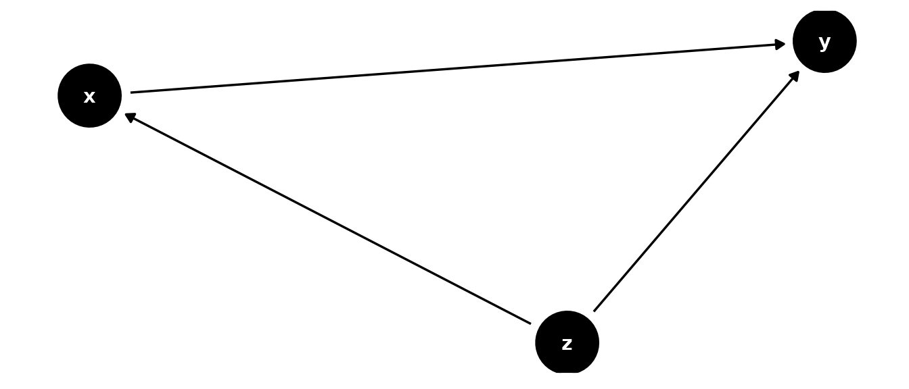
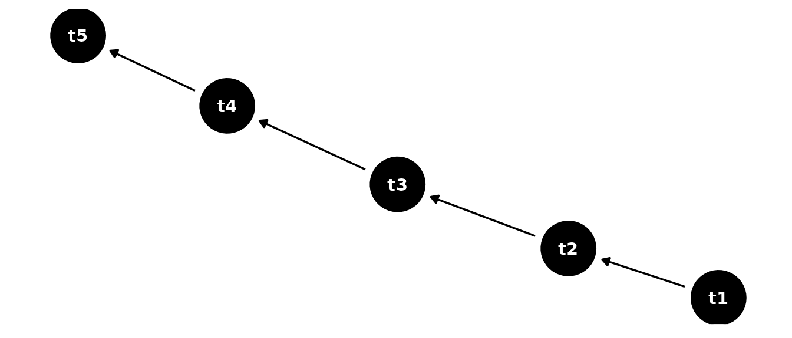

Panel.Rmd
rm(list = ls())
library(tidyverse)
#> ── Attaching packages ─────────────────────────────────────── tidyverse 1.3.1 ──
#> ✓ ggplot2 3.3.5 ✓ purrr 0.3.4
#> ✓ tibble 3.1.5 ✓ dplyr 1.0.7
#> ✓ tidyr 1.1.4 ✓ stringr 1.4.0
#> ✓ readr 2.0.2 ✓ forcats 0.5.1
#> ── Conflicts ────────────────────────────────────────── tidyverse_conflicts() ──
#> x dplyr::filter() masks stats::filter()
#> x dplyr::lag() masks stats::lag()
library(ggdag)
#>
#> Attaching package: 'ggdag'
#> The following object is masked from 'package:stats':
#>
#> filter
library(tidygraph)
#>
#> Attaching package: 'tidygraph'
#>
#> The following object is masked from 'package:stats':
#>
#> filter
library(dagitty)
library(ggraph)
library(ralget)
#>
#> Attaching package: 'ralget'
#> The following object is masked from 'package:base':
#>
#> %x%
library(raldag)
#>
#> Attaching package: 'raldag'
#> The following object is masked from 'package:stats':
#>
#> simulateDeclare variables.
z <- v("z", .f = d(~ rnorm(n = 10^3, mean = rsum(.x), sd = 1)))
x <- v("x", .f = d(~ rnorm(n = 10^3, mean = rsum(.x), sd = 1)))
y <- v("y", .f = d(~ rnorm(n = 10^3, mean = rsum(.x), sd = 1)))Declare causal relations.

Declare periods.
t1 <- v("t1", .f = d(~ rnorm(n = 10^3, mean = rsum(.x), sd = 1)))
t2 <- v("t2", .f = d(~ rnorm(n = 10^3, mean = rsum(.x), sd = 1)))
t3 <- v("t3", .f = d(~ rnorm(n = 10^3, mean = rsum(.x), sd = 1)))
t4 <- v("t4", .f = d(~ rnorm(n = 10^3, mean = rsum(.x), sd = 1)))
t5 <- v("t5", .f = d(~ rnorm(n = 10^3, mean = rsum(.x), sd = 1)))Specify persistence.

Combine cross-sectional and time series DAGs.
xt <- cartesian_product(g,t,node_combine = ~ c(.x), edge_combine = ~ c(.x,.y))
plot(xt)Compare \(E(Y|do(z_{t3}=0)\) with \(E(Y|do(z_{t3}=1)\).
z_t2_0 <- xt %>% manipulate(z_t3 = 0) %>% simulate(label = "z_t2 = 0",seed = 2)
z_t2_1 <- xt %>% manipulate(z_t3 = 1) %>% simulate(label = "z_t2 = 1",seed = 2)
bind_rows(z_t2_0,z_t2_1) %>% panel_gather() %>% panel_plot()